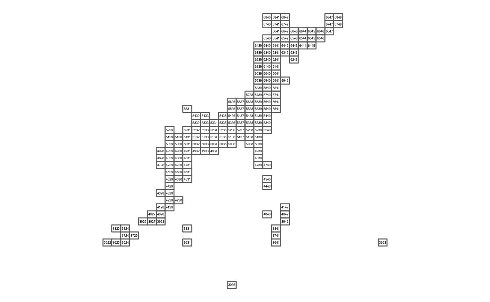

library(magrittr)
library(jpmesh)
library(sf)
library(purrr)df_polys <- meshcode_set(mesh_size = "80km") %>%
tibble::tibble("mesh" = .) %>%
dplyr::mutate(geometry = purrr::pmap(., ~ export_mesh(mesh = ..1) %>%
sf::st_as_text())) %>%
tidyr::unnest() %>%
dplyr::mutate(geometry = st_as_sfc(geometry)) %>%
st_sf()df_polys %>%
st_geometry() %>%
plot()# Use develop version (2.2.1.9000)
library(ggplot2)
ggplot() +
geom_sf(data = df_polys, fill = NA) +
geom_text(data = df_polys %>% dplyr::mutate(
CENTROID = map(geometry, st_centroid),
COORDS = map(CENTROID, st_coordinates),
COORDS_X = map_dbl(COORDS, 1),
COORDS_Y = map_dbl(COORDS, 2)
),
aes(COORDS_X, COORDS_Y, label = mesh),
size = 1.2, min.segment.length = 0) +
coord_sf(datum = NA) +
theme_void()
library(leaflet)
leaflet() %>%
addTiles() %>%
addPolygons(data = df_polys)wip…
sessionInfo()
#> R version 3.4.3 (2017-11-30)
#> Platform: x86_64-pc-linux-gnu (64-bit)
#> Running under: Debian GNU/Linux 9 (stretch)
#>
#> Matrix products: default
#> BLAS: /usr/lib/openblas-base/libblas.so.3
#> LAPACK: /usr/lib/libopenblasp-r0.2.19.so
#>
#> locale:
#> [1] LC_CTYPE=en_US.UTF-8 LC_NUMERIC=C
#> [3] LC_TIME=en_US.UTF-8 LC_COLLATE=en_US.UTF-8
#> [5] LC_MONETARY=en_US.UTF-8 LC_MESSAGES=C
#> [7] LC_PAPER=en_US.UTF-8 LC_NAME=C
#> [9] LC_ADDRESS=C LC_TELEPHONE=C
#> [11] LC_MEASUREMENT=en_US.UTF-8 LC_IDENTIFICATION=C
#>
#> attached base packages:
#> [1] stats graphics grDevices utils datasets methods base
#>
#> other attached packages:
#> [1] ggplot2_2.2.1.9000 bindrcpp_0.2 purrr_0.2.4
#> [4] sf_0.6-0 jpmesh_1.1.0.9000 magrittr_1.5
#>
#> loaded via a namespace (and not attached):
#> [1] Rcpp_0.12.15 plyr_1.8.4 pillar_1.2.1
#> [4] compiler_3.4.3 bindr_0.1 class_7.3-14
#> [7] tools_3.4.3 digest_0.6.15 gtable_0.2.0
#> [10] evaluate_0.10.1 tibble_1.4.2 pkgconfig_2.0.1
#> [13] rlang_0.2.0.9000 shiny_1.0.5 DBI_0.7
#> [16] crosstalk_1.0.0 yaml_2.1.17 e1071_1.6-8
#> [19] withr_2.1.1.9000 dplyr_0.7.4 stringr_1.3.0
#> [22] knitr_1.20 htmlwidgets_1.0 tidyselect_0.2.4
#> [25] classInt_0.1-24 rprojroot_1.3-2 leaflet_1.1.0
#> [28] grid_3.4.3 glue_1.2.0 R6_2.2.2
#> [31] rmarkdown_1.8 tidyr_0.8.0 udunits2_0.13
#> [34] scales_0.5.0.9000 backports_1.1.2 htmltools_0.3.6
#> [37] units_0.5-1 assertthat_0.2.0 colorspace_1.3-2
#> [40] mime_0.5 xtable_1.8-2 httpuv_1.3.5
#> [43] stringi_1.1.6 miniUI_0.1.1 lazyeval_0.2.1
#> [46] munsell_0.4.3